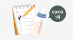
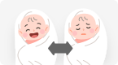

성공 확인 포인트
성공 확인 포인트
 수유 후 불편 신호 감소
수유 후 불편 신호 감소- 보챔 횟수 감소
우리 아이에게 지금 먼저 챙겨주면 좋은 포인트를 쉽게 정리했어요.

오늘부터 해볼 케어
 보챔 개선
보챔 개선
 보챔이 반복되는 시간에 맞춰 수유 간격을 조금씩 조정해요.
보챔이 반복되는 시간에 맞춰 수유 간격을 조금씩 조정해요.
 지표 신호
지표 신호
 문진 신호
문진 신호

수유 시간과 횟수를 작성하고,
우리 아이의 불편한 신호가 확인될 때를 기록해요.
수유 후 약 10분간 편안히 안아주고,
트림과 호흡·표정이 안정되는지 확인해요.

수유 후 보챔과 배팽만 변화를 확인해요. 아이 반응을 보며 무리하지 않고 천천히 진행해요.
성공 확인 포인트
수유 후 불편 신호 감소 보챔 횟수 감소 이럴 땐 병원으로!
이럴 땐 병원으로!
아이가 급격히 보채거나 체중 증가가 더딘 경우,
즉시 간격 조정을 중단하고 기존
패턴으로 복귀하세요.
* 이 결과는 통계적 연관/경향을 기반으로 하며, 특정 질병의 원인을 단정하지 않습니다.